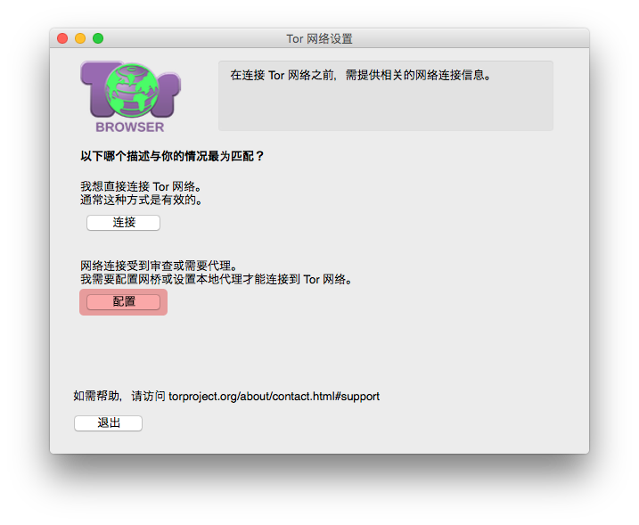
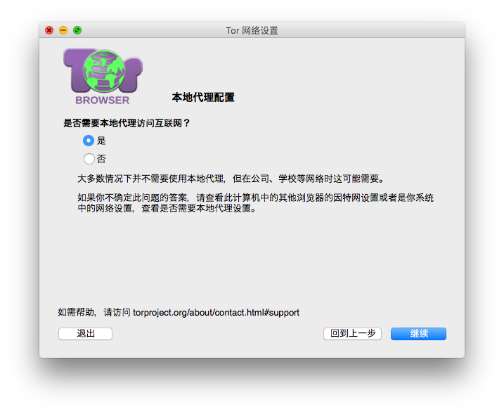
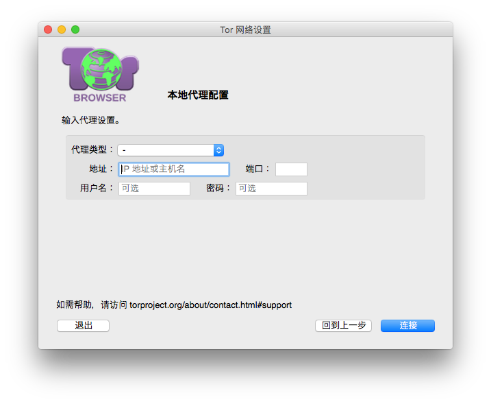

初次运行 Tor 浏览器
当您首次启动 Tor 浏览器时，您会看到洋葱路由网络的设置窗口，此处您可以选择要浏览器直接连上洋葱路由网络，或者是要设置不同的连接方式。
连接

在大多数情况下，点击“连接”可以让您不作任何进一步的设置就直接连上洋葱路由网络，点击后将会出现一条状态栏显示目前洋葱路由的连接创建过程，如果您的网络带宽充足但是此状态栏却长时间停滞在某个点上无法完成连接创建，请参考错误处理页面以寻求解决问题的协助。
配置

如果您使用的网络有被过滤阻挡，或是您有使用代理服务器，那您就必须要选择此项目，Tor 浏览器将会引导您进行一连串的相关设置进程。
在第一个画面中您必须回答您所处的网络环境是否会过滤阻挡通往洋葱路由网络的连接，若您认为不会的话，请选择“否”。否则若您的网络有被过滤阻挡，或您已经尝试过各种连上洋葱路由网络的方法但都失败的话，请选择“是”，本程序将会带领您前往审查规避画面进行 可插拔传输层 的相关设置。
-
在下一个画面中，您必须要回答您的网络连接是否有透过代理服务器来连上网络，通常您应该很清楚自己是否有使用代理服务器，因为这部分的设置在您电脑中的每个网络浏览器里都会一样。若您不确定的话，可以询问您的网络管理员，若您确定无使用代理服务器的话，请点击“继续”。

